Development Posts
Keep up to date with the latest news!
The Final Stretch - #20
The game has finally reached it's first beta release and is ready for our project deadline, it feels like such a long time ago since we set out on this project back in March but it also feels like that was only a few weeks ago.
Over the course of the past week and a half, a lot of work has been carried out to reach our goal. This started with the addition of several melee and ranged weapons being added into the game with custom move sets and animation cycles using my modular weapon creation system that I created a few months ago for the project. These were calibrated for our player model using the point anchoring system that was developed as part of the sheathe and unsheathe weapon system so that each weapon attaches to the model's hand.
I encountered a lot of issues with saving and loading that hadn't previously occured to me such as that you can't save an object from a list of its parent type to JSON and reinstantiate it as its original type as it looses any child data when converted to JSON. This caused me quite a few issues when ading Sam's quest objects to the SaveData class throughthe use of several types of data objects due to its complex nature. Another issue that I hadn't expected was when loading and setting the lcoation of the player, I needed to diable the character controller, change its position and then enable it again so that the character controller didnt set its position back to where it was originally.
We also realised that the chibi style I had made for our player wasn't of the level of detail we would like for the final project so we decided to use a tool called VRoid, another tool built with Unity which allows for the creation of anime styled humanoid models and allows you to texture them and export them to a format called VRM. After ensuring that any model we created would be usable for commerical uses, we created various models to use in the beta version of the game; however by default, Unity does not understand what a VRM file is but luckily there is a Unity package for the importing and usage of the VRM models though since we were working with HDRP, the shaders were incompatible and we had to manually create shaders for each body mesh which Sam took care of while I carried on with other tasks.
While Sam was manually creating the materials, I went ahead and added more items to the game for players to use and also added in the various weapons to the Item Database asset as I had previously forgotten to do so.
I then moved onto rebakign the navmesh for our enemies as a lot had been changed with the terraina nd models since we had last baked it, this took an extensive amount of time due to the size of our terrain and the many gameobjects on it. The asset file for the navmesh exceeded well overr 100mb which is GitHub's file size limit. This meant I had to learn how to use Git LFS and commit our navmesh seperatly first before moving onto the other chnages I had made.
Most of the remaining work carried out was bug fixing on various systems and then I extended on Sam's quest system to spawn quest markers and quest related item pickups to prevent players from farming items and soft locking the quest progression.
By Ronan Cassidy - 30th of August 2020
Stylising and Modelling - #19
To ease myself into the week, I started by creating a simple background music system that cross fades between two tracks however I had a lot of trouble getting the tracks to reliably switch when enemies are nearby and switching back to the correct track when there are none without impacting performance of the game heavily. For this reason I decided to leave it on just one track for the time being and hope to return to it near the end of the project to try again with a fresh perspective.
With the deadline approaching, I moved onto creating models for our terrain such as houses, bridges,etc. However I found myself taking a long time to get models doen in Blender and Maya as it had been a while since I had used either and wasn't as confident with htem as I had been in the past. So I decided to take a look on Open Game Art for models that we could use for the beta build of the game, during my search I came across a modular set of building blocks for use in a tool called Asset Forge that was actually built with Unity, it is a kit-bashing kit that allows you to esentially take a "lego-like" approach to creating 3D models and with the use of public domain asset packs I was able to quickly create models that really suited the aesthetic we were aiming for with our Windwaker style water that I mentione din my previous post. While this certainly helped speed up the process, it did take me a while to get used to this new tool but once I did I was able to get all of our models for buildings, melee weapons and ranged weapons done in the space of a few days with textures as well.
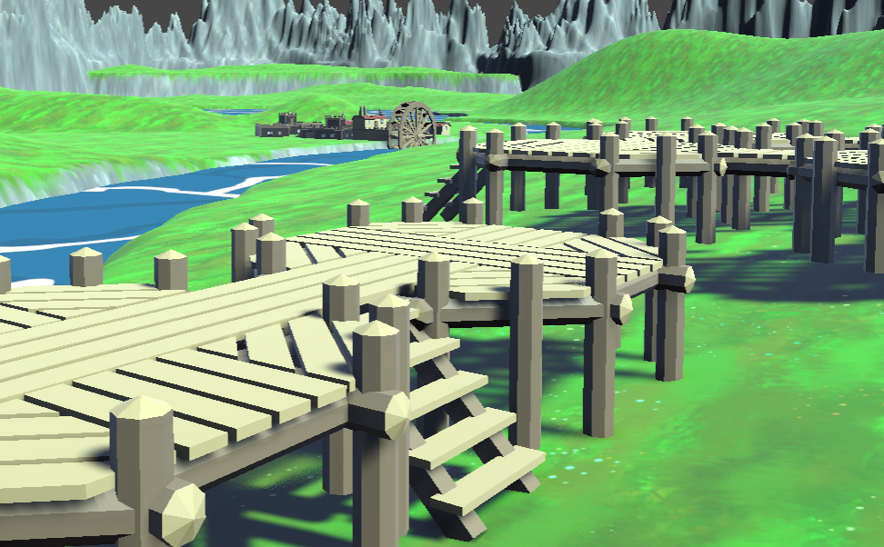With the game starting to take form and more and more gameplay being added by the day, I developed a simple merchant system to let players buy items and weapons and sell any enemy treasure they gather while exploring. The system does not currently allow for the purchase or selling of multiple items at a time but I hope to revisit it after the deadline and improve on this system so that players have a much cleaner and simpler experience with the UI. I made a few minor changes to other UI elements as well mostly in regards to their sprites and appearance rather than any code.
By Ronan Cassidy - 18th of August 2020
Moving to HDRP & Adding Gameplay - #18
During the past week, I've accomplished various tasks as the game comes closer to its first fully fuctional build. I started off the week by adding in a comfirmation popup for overwriting save files when the player selects new game. I then replicated this in the pause menu for the save button but it doesn't seem to be playing nicely with the pause menu controller, I plan to return to it to try and fix it up and make sure it works reliably when players try to save the game. Since I had been adjusting some of the save and loading UI, I decided to refactor and cleanup my save and loading class as well as the title menu save controller which handles the creation of new save files and sets the load slot.
I decided to then enlist the help of somebody who has never seen the game before to find out how they would interact with the pause menu UI and how they would try to break it, this quickly revealed a flaw with the confirmation panels that hadn't occured to me before. My test user had clicked into save and once the confirmation panel popped up, they went and clicked one of the pause menu icons causing the menu to change and the confirmation panel to glitch, not allowing you to exit the menu or get rid of the pop up. To counter this issue, I developed a simple method to check if a confirmation panel is active and then incorporated it into the necessary if statements for each button's logic on the pause menu.
At this point, we merged all branches into master and I started on upgrading the project's render pipeline to Unity's High Definition Render Pipeline as wanted access to Shader Graphs, the HDR pipeline seems to suit our needs over the Lightweight Render Pipeline as we plan on using normal maps which the version of LWRP that is compatible with our version of Unity does not allow. Upgrading the project to HDRP let to many issues straight off the bat, this mostly pretained to shader issues which meant that I had to go manually change all the shaders on our game objects and terrains to a compatible HDRP shader as the upgrade button for all materials was not working. Over the course of the week, I had to constantly change some post processing effects to get the scene to look somehwat "normal" and change the camera's settings such as aperature and ISO to prevent the screen from being blinded by our directional light. I found that trying to follow a tutorial for fixing the blinding light didn't really help me as much as just pure trial and error due to the many factors such as material properties, light direction and many others. I now understand why game lighting and camera work can take so long to ensure that it works correctly and fits the artistic theme of the game world.
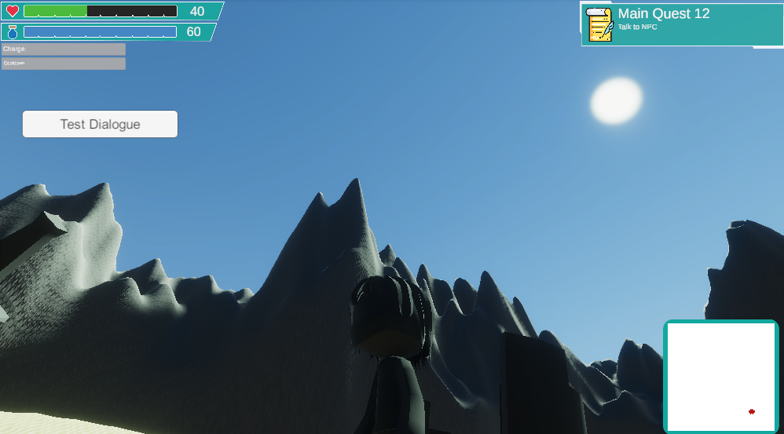Once the HDRP had been implemented, I started work on using Shader Graph to create the shader for our water planes that are set under the terrain, peeking out in areas where we want the water to show up. I tried to mimic a toon-like water shader similar to the style of The Legend of Zelda Windwaker as it's cartoon like appearance is more achievable for us with our remaining time before the deadline. Having created shaders in HLSL in the past made using the shader graph a lot easier and helped me understand how to manipulate the water textures to achieve the stylised effect.
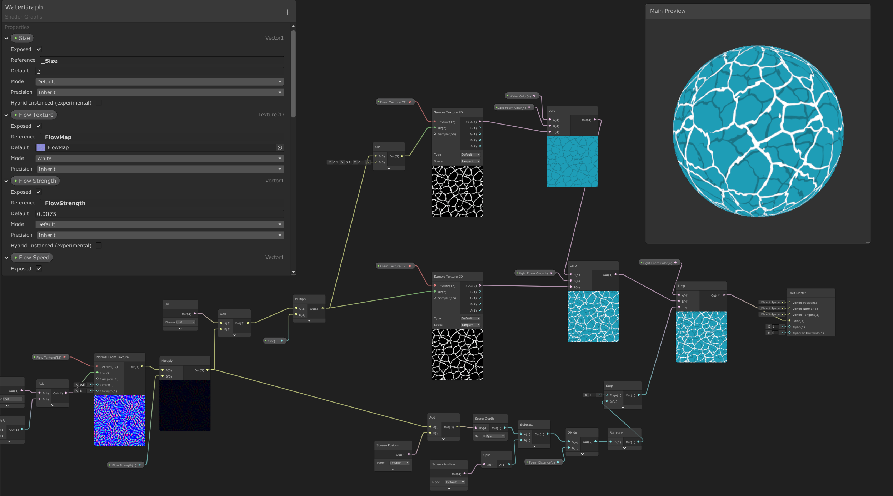Before this week, there wasn't much reason to actualy fight enemies except if they were in your way or you just like to dash into a horde of enemies and fight to the death. To give players some encouragement to fight, I developed a treasure table system for our enemies, the concept of the treasure table is rather simple as each enemy has a list of items which the enemy will drop when defeated. However I wanted to make sure that we could give each item a certain drop percentage, making some items rare than others. I accomplished this using a ratio based percentage system that is used in tandem with an algorithim to choose a randomn item to drop on the ground once they have been defeated.
Aiming to reach our minimum build for the project, I created a new scene for the game over state that will fire off when the player's health drops below 0. This was a simple scene with two buttons, one to return to the last save point and the other returns the player to the main menu.
Since I had somewhat touched on the combat system when adding in the treasure table drop system to the enemy, I decided to take another look at the player attack which then led to the realisation that I had not yet implemeted the bonuses given by equippable items and the ability tree. These tasks didn't take long as I had already created methods in the past to get the values from the items and to recursively find the total amount of the ability tree bonuses.
I returned to the ability tree UI to get it working with my custom script for navigating a list of buttons with a controller and to update the asthetics to match the new button style on the pause menu, I successfully incorporated my script though at this point I am unsure if the controller navigation for the pause menu will be complete in time for the deadline so it may be something that I will work on more after the deadline. I then decided to tackle the saving of each nodes data so that the ability tree progress would reset on a new game and would persist if saved then loaded. I am sure there are much more elegant ways to save a list of scriptable objects for such a purpose but my method was to make a serializable data object that would be saved to JSON and that data would be applied to the scriptable object on load of the JSON. To ensure that I was assigning the variables to the correct ability node, I added in an ID variable that would be compared with the data object before applying the values.
Having achieved quite a lot in the space of a few days, I revisted our initial proposal and checked our scope to ensure that we had not left out any important features or mechanics that we had originally intended on adding to the game. This led me to working on the leveling system for the player, I wanted to make sure we would be able to easly change the xp required to get to level x so I designed a scriptable object that would allows us to do exactly this. I then added onto this concept of being able to set the amount of ability points and skill points that the player would get at each level. However there was no way for a player to add skill points to their character's stats so I added in a Stats menu to the pause screen that would display the current level and experience points of the player. Having spent a lot of time playing Dragon Quest IX in my earlier years, I decided to model my skill point system after that where player's would use arrows to assign skill points and once all their unspent skill points had been assigned, the arrows to increase would become uninteractable with and gray out. The player then hits confirm to spend their skill points and their stats are increased by the values they chose, a simple system in theory but I took time to make it a "tilable" system so that you could add more skills to it if decided in the future. I do plan to maybe reuse some parts of the code for the merchant/shop system in the future to let player's buy multiple items at once or sell multiple items.
I then spent the remainder of the week working on further saving and loading related systems such as ensuring that the player's quipment loadout would be loaded correctly and applied to them on load, I plan on refactoring the equipment system at a later date if I have the time as I feel a lot of it could be refactored and streamlined since some of the original systems it worked with have been deprecated such as my sheathe and unsgheathe system.
By Ronan Cassidy - 11th of August 2020
Combining the Elements - #17
As the NPCs are starting to take shape, interactable NPCs were implemented, allowing the player to select an NPC, and have them 'talk' with eachtother. The NPC will have several dialoge options attached to them, allowing for a default speach pattern and a different, quest specific, dialogue option. The dialogue manager will consult the quest manager to determine if the active quest step has the same name as any dialogue options.
Next, the quest steps require methods by which they can update their conditions. For NPCs and Location quest steps, this can be achieved when a conversation has finished, or with a trigger collider respectively, these events triggering an update on the quest steps to be marked as complete and tell the quest manager to move on to the next step. The Quantity quest steps, that is, the player is required to collect a certain number of items or kill a certain number of enemies, was trikier to implement. The descision was made to create a method that will first, add to the character's counter then check if the quantity is sufficient to trigger a move to the next step in the quest. This method will be reqired in other scripts to trigger it.
This now needs to be fed into the UI. There is a box in the HUD that let's the player know thier current quest and the next step in that quest, but a more detailed UI was created to allow the player to view more details. As this is now implemented in the Pause menu's UI, it has a more consistent design with the rest of the game.
By Sam ColvilleRea - 10th of August 2020
Increasing Project Velocity - #16
Project velocity can play a key role in the development of any project as it represents the amount of work done over a period of time, due to many diffrent reasons project velocity can fall and cause delays in the project. Over the course of the past week, I have tried to greatly increase my work velocity as the project's due date draws nearer. I found that taking a day to reorganise myself and tidy up our Kanban board on Trello helped me refocus and assess what tasks needed to be prioritized and the route which I needed to take to accomplish the tasks ahead of me.
Starting off with the Fast Travel system, I implimeneted a map view into the UI to illustrate to the player where they will be teleporting to when they hover over or select an fast travel point from the list menu. Currently the map view just shows a white square as the level layout is not fully complete so I haven't put the birds eye view of it into the UI yet as shown below. The UI changes proved not to be very difficult to implement thanks to Unity's UI system but in the background I was able to reuse some of the auto lock systems's UI code to move the red indicator on the map to where it is on the world map. I accomplished this through the use of a custom script that takes in both the dimensions of the game world and the UI map element and calculates the ratio's of the travel point in relation to the 3d world space and translates the indicator an equal ratio on the UI.
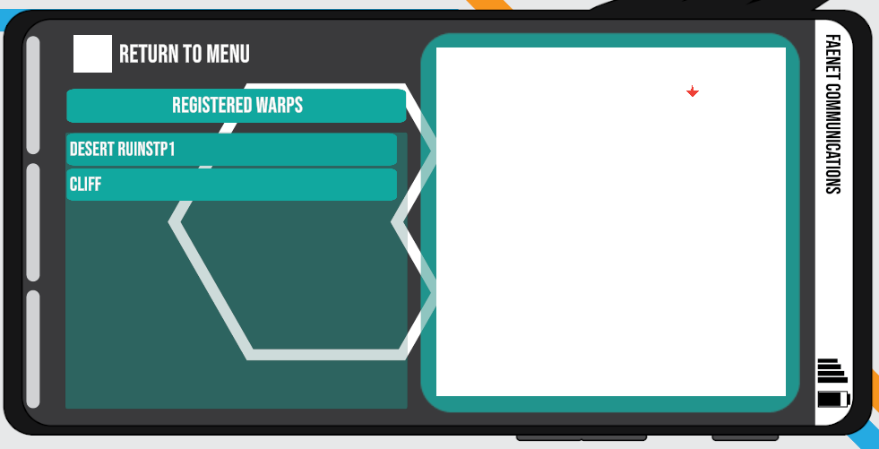After having worked on the map view for the fast travel UI, I realised that with a slight change to the script I wrote for it, I could use the same code for a minimap on the player's HUD and to display their location on the map and possibly the locations of mission objectives at a later point. As shown below, the minimap has been integrated into the player HUD with the white square once again as a temporary placeholder.
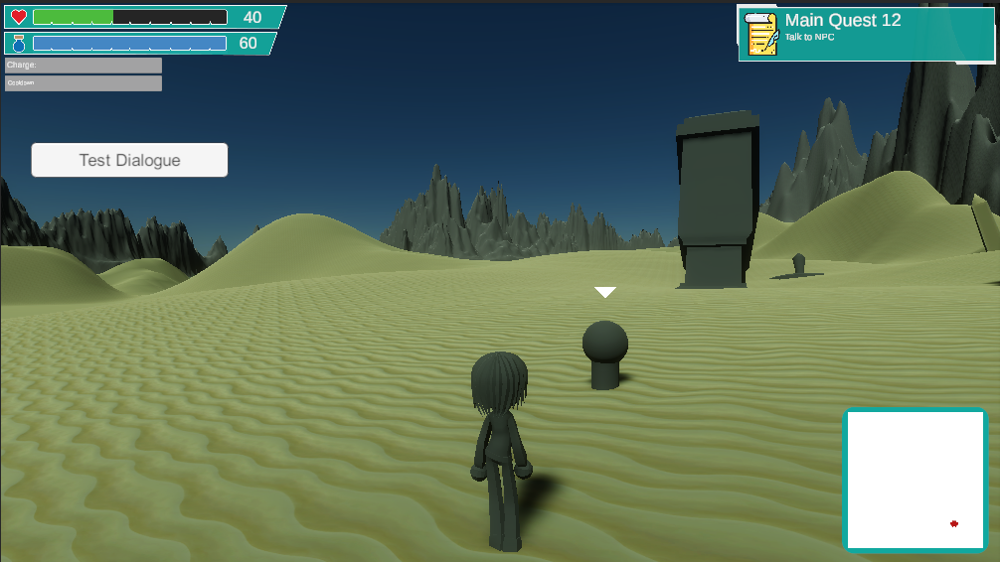At this point I took a look at the current gameplay of Project Crescent and the systems implimented thus far before moving onto my next task, this led to the development of a treasure table system for enemies. The treasure table defines the drop items of the enemy and the likelihood of them dropping through a ratio based percentage system. To help randomnly pick and item from the treasure table with respect to the ratio based percentage chance, I wrote an algorithim as an extension method to pick a random item from the list and place it into a collectable item object which is instantiated on the death of the enemy, spawning at the point where they were defeated on the terrain.
Since I had been working on UI quite a bit during the week, I decided to integrate Sam's Quest UI into the current Pause Screen UI alongside the other various systems, adding the UI and updating the relevant scripts to interact with the new addition so that we could swap between each menu in the pause screen and return to the root menu. I then started on unifying the asthetics of the quest UI with the theme of the other menu's on the pause screen. This involved the addition of Quest icons, replacing Unity Text components with TextMeshPro Text components for a crisper and sharper text at higher resolutions as well as the creation of some new sprites for the UI in Adobe Illustrator.
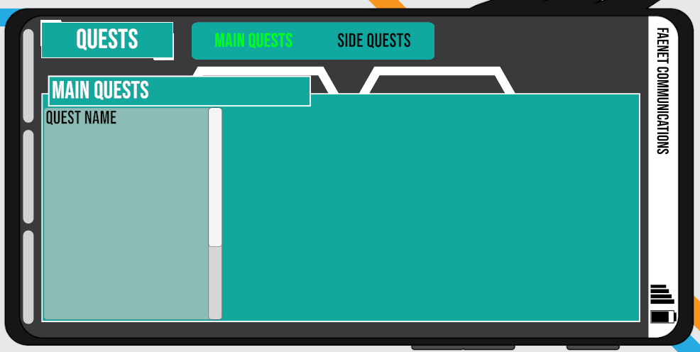Aiming to reach our minimum viable project in the event that anything catastrophic or unexpected were to happen, I developed a title screen for the game and implimented the load game and new game logic into it. It took a few tries to get the plan of how the game would load its data nailed down, the final concept was that the title screen would handle selecting which slot to select and the overwriting of data for a new game. Then when the core game scene is loaded, it fires off a method which grabs the file associated with the slot and loads the data in, applying it to the various objects and instantiating and neccessary game objects. This sytem proved to work very well for the flow of the game and reduced the overhead of transferring a lot of data between two scenes, only needing to pass on a single integer to load the data in.
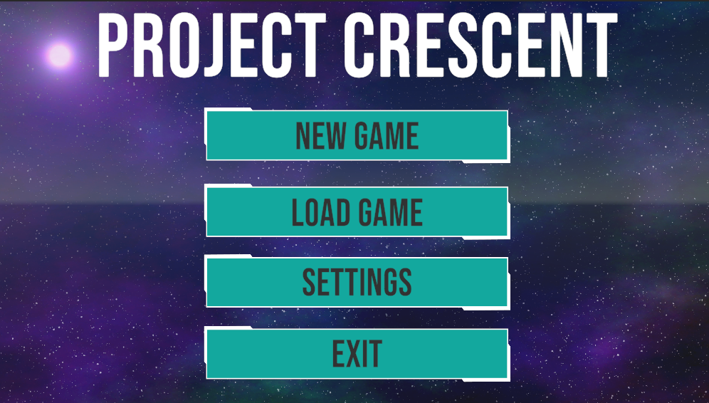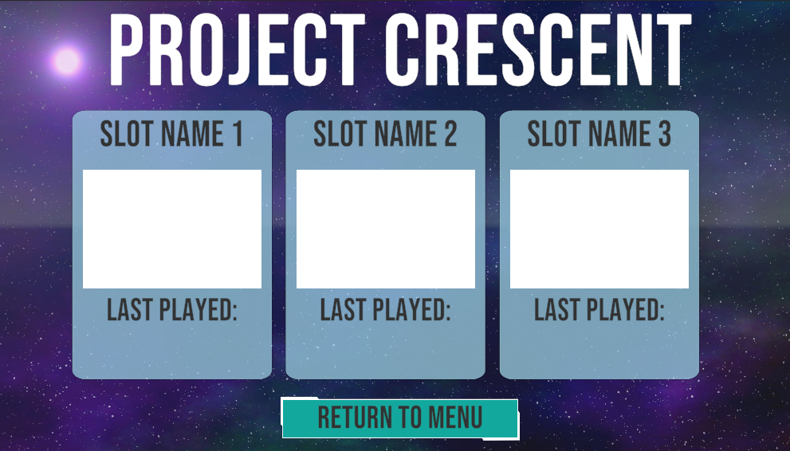
In terms of the asthetics, the file slots have a very simple feel to them and a placeholder for a Project Crescent icon to help players identify which save slot was theres if they are sharing the same device. For example, one icon will be blue, another red and the final one being green though if I have enough time I may expand that to a little bit of artwork instead.
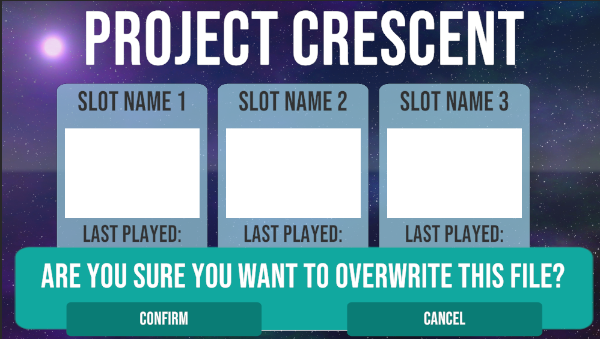Another important part of the title screen is the settings menu which uses the same scripts as the gameplay scene's settings but when bringing the prefab over to the title scene, all the UI elements resized automatically making them unusable so I had to redo the gameobject part of the settings UI manually.
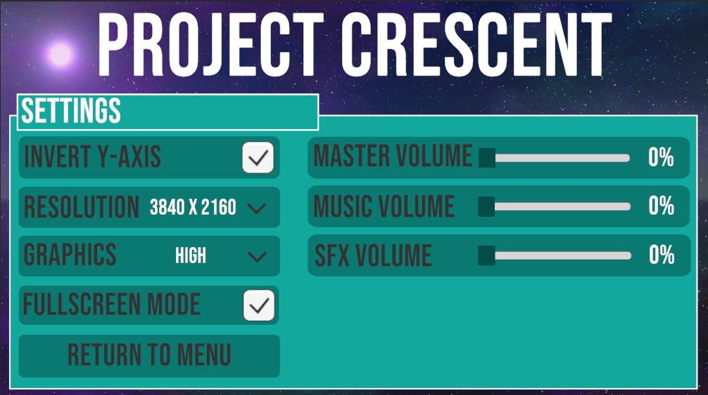With the addition of various new pause menu options, I felt that the UI was starting to feel cluttered and hard to read as it was a list of buttons with just text and it didn't really give the UI/UX feel of a smartphone in real life. It felt more like a beginners tutorial for creating an app in Kotlin, so I revisted the design and decided to update the UI. This led me to change from text buttons to anicon based menu similar to an actual smartphone as shown below, this led me to be able to add in placeholders for some work I'm planning on finishing next week.
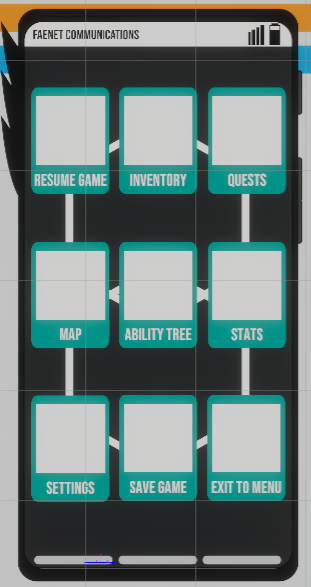By Ronan Cassidy - 3rd of August 2020
Working Towards The Merge - #15
After taking a week off to recover from some burnout due to working on the project non-stop for several weeks and weekends, I returned and we began to work towards merging our branches back into the master and combining our work to complete the minimum viable project. This task has involved various refactors and completition of features.
In the space of the week, I was able to accomplish many goals and fully impliment various features. The first step of this work was to adjust our animation cycles to work correctly with our new model and take into account the redesign of the attack system a few weeks back as the player must no longer sheathe and unsheathe their weapon, this process was time intensive as it required the redesign of various state machines within the player animation component/tree. The key features are the ranged attack being completed alongside its ability tree as well as the ability to equip different weapons via the inventory menu. Other work was carried out such as applying a singleton design pattern to the player and various systems due to their nature in the game as we only need one instance of them at any given point.
We did however run into some issues in regards to the merging of our branches due to an issue in one scene that we couldn't debug as after running diagnostics on it, the script should have been fine but Unity was throwing an exception at us. We resolved this issue by reverting and doing a manual merge for various files to avoid the situation cause by our automatic merge, this took a long time as it was an intensive merge to do manually.
From this point, I evaluated what systems in the game could be simplified to make the merging of prefabs and systems down the line easier for the project, this led me to refactor various HUD elements and carry out hotfixes for some graphical issues that appeared.
By Ronan Cassidy - 24th of July 2020
Model Creation - #14
Originally this post was written on the 10th of July but due to some unknown reason, it didn't push the commit to the origin. So it is being reposted alongside another post.
I spent the majority of this week working on 3D model creation of various structures for the desert section of our world, temples, ruins, etc. My asset creation also led to working on the main characters final model, this was quite difficult as it was the first time I had done any work on creating a humanoid organic character. Previously I had been working on mechanical humanoids such as robots and mechs so it was very strange to move to more oranic modelling and curves, to make things easier for me I decided to go with a chibi art style due to its simpler shapes.
By Ronan Cassidy - Posted: 24th of July 2020; Written: 10th of July 2020
Moving quests further - #13
Now that the Quest UI is mostly complete, development has turned towars implementing and testing how quests are dealt with in gameplay
This has started with using test quest objects. These are scriptable objects saved in the resources folder so that scripts can access their data, and the player can modify the data as they progress through the game.
The Quest Manager has several methods that allow access and modifacation as the play completes a task. This needs further development to create events that will trigger these updates.
Most simply, these can be triggers attached to gmaeobjects in the scene, but some are more complex, such as talking with an NPC or collecting a set number of items. This should be overcome by adding a refrence to the methods to certian objects' scripts.
Finally, a small HUD was added that allows the player to see their current active quest. This can be set by the player within the quest UI and can be customised to be a Main Scenario quest or side quest. This may be altered further in development to show the current MSQ and a customised Side quest the player woulkd like to track. Some games allow the user to select multiple quests to track, which could also be an option in the game.
By Sam ColvilleRea - 6th of July 2020
UI, Fast Travel & The World Beyond - #12
During the past week, I've been working on some much need UI and UX work in regards to the player HUD. I decided to streamline the helath and magic bars design using an icon to illustrate which is which and also included little ticks along each bar to represent approx. 10% intervals so a player can get a better idea of how much they have left. Another welcome addition ot eh player HUD is the addition of animation events to elements such as the popup box that actvates when near an interactable and also the notifcation bos that displays all the items a player just collected for a few seconds. The updates to these elements of the HUD also involved some updated graphics with a simplistic modern technical vibe to fit the narrative of the game.
I revisted the fast travel system and tidied up the UI a bit as well as added a new model for the travel points with a particle effect that activates if the travel point has been unlocked to give players a visual representation that they have unlocked it without having to walk right up to it to see wether they can interact with it or not. Some general refactoring for some player components was also carried out and I begun work on implimenting a test gun weapon to ensure that the ranged player attack was still functioning as intended.
The latter half of the week was spent sculpting the terrain, painting the textures onto it and creating various models to poulate the game world and make it feel less barren. This terrain development is still underway as there are many areas which need to be built up as well as the addition of water, trees and pathways.
By Ronan Cassidy - 5th of July 2020
What's in a Quest? Navigating UI - #11
As previously mentioned, the quest system is starting to take shape. Over the past few weeks, I have been attemting to use the UI Tab System further, to impliment the UI to view current quests.
Currently, a user can click and select a tab button to switch between Main Scenario quests and side quests. This produces a new pannel with relavent information. The next step is to create a similar system for the pannels so that the user can select a quest and see more detailed information, such as relevant items and/or locations, as well as a list of the previously completed steps in the quest.
The trivky bit so far ahs been linking up the UI elements in each panel to the correct information in each quest, and furthermore, to have the quest list also act link the tab system used in selecting MSQ/Side quests.
Scriptable objects have been very useful so for in this endeavour. They allow easy creation, naming and linking of quests as well as easy access to loading them as resources; allowing them to be read by the application any time the user wants to view this information. The next descision is wether to hold access to these in memory, or have the application load them as and when they are needed.
By Sam ColvilleRea - 27th of June 2020Saving & UI Updates - #10
Over the course of the past two weeks, I've sunk a lot of time into exploring the various ways for us to save the nearby enemies and load them back in the same position without spawning duplicates of them. This lead to a lot of research around world streaming for open world games and the various methods to achieve this, after many attempts to develop a simple world streaming system, it became clear to me that it was not worth putting more time into the idea in regards to the time left for our project and that there was a less elegant but still valid method for saving the enemies. Part of this plan was to develop a simple enemy spawner that spawns an enemy every X seconds as long as the enemy cap is not reached, the enemies loaded back in are only within a certain range and if an enemy is Y meters away from the player then they will despawn, freeing up the ability for another enemy to be spawned. This was carried out in the first week as well as some adjustments to how the enemy is structured and minimised the amount of data that actually needs to be saved thus reducing the size of the save file and complexity of loading them back in.
In the second week, I moved onto some much needed work in the Pause Menu UI which includes the Settings, Inventory, Fast Travel and Ability Tree. I started off looking at the inventory UI again fixing any small bugs and setting the navigation properties of the various elements so that players can use a controller to navigate the UI.This also meant that I took another look at my auto scroll function for Unity's scroll view which is needed for controller support, after some debugging and testing I was able to solve any issues and get the system working correctly with its various filters. I was able to reuse the autoscroll in the ability tree UI for the navigation of the down through the tree, it was also added into the settings menu for the resolution dropdown due to the amount of options there is. The settings menu is completely functioning and saves its values to PlayerPrefs as they are not game data but more so client application prefrences.
At this point of the project I would say we are behind schedule a bit but we're now at a point where we can start bringing the systems all together and move towards the design of both our models and the world. Moving on from this point there are various tasks that need to be done but taking into account of the minimum viable project, I feel it may be wise to get some assets done and the terrain for our world created, implimenting the various systems together as we piece together the mvp.
By Ronan Cassidy - 27th of June 2020
Enemy AI and Attack Cooldowns - #9
To further add to the enemy AI which I mention previously, I implimented a view "cone" for the enemies to use as their field of vision. The enemy will only start attacking/following the player once the player crosses their field of view, the enemy will continue to pursue the player until they leave the specified range and then they will return to their patrol path.
I then returned to the player attack system as it felt slugish and not enjoyable from a player perspective, to counter this issue I have removed the animation lock based combat and instead implimented a cooldown based system similar to that in a hack and slash game. Having seperated the attack logic from the animations, I then reimplimented the charge attack to function correctly with cooldowns. WHile I was implimenting the cooldown based attack, I decided it would make sense to allow the player to do a slam attack which will be possible if the player jumps in the air and hits the attack button. Once they reach the ground it will trigger the attack causing damage in the specified attack zone based on the weapon detail object I have mentioned before.
With the addition of this new cooldown based system, I needed to reimpliment the ability trees due to a strange corruption of the scriptable objects, this was not a huge problem however as I was able to quickly rectify the issue and impliment a further tree for ranged attacks and start on the magic ability tree. As the new ability trees are implimented, I have also been implimenting them into the players attack script, at the time of writing the player can used ranged and melee weapons to battle enemies.
To change things up for a little bit and refresh my mind from working on the attack system, I took a look into developing a vehicle system for the player to quickly travel throughout the open world. As it is something I have never taken a look into in the past, I read a few unity articles and documentation on wheel colliders and how to construct a simple vehicle, from here I implimneted it so that it would simply slot into the input manager when it is complete. There is still quite a bit of work to put into the system but at least the foundation for it is there.
Looking ahead, I hope to have the magic system implimeneted by the end of the week and continue work on the saving and loading of game data. I have begun the implimentation of this but it is quite a lengthy process due to the many small details which need to be taken into consideration such as saving the locations of nearby enemies so the player doesnt save and reload to try and escape a dire situation, the main saving logic is there but I need tot take into accound the saving and loading of these many other objects.
By Ronan Cassidy - 15th of June 2020
Inventory & Enemies - #8
As I forgot to post to this blog last week, I've got quite a bit of work to talk about so lets start off with the inventory system work. I revised the pause screen/ inventory screen and updated the UI to be something more akin to what will be in the final game rather than a number of gray panels layered on top of each other. This addition of UI design did help me lay out the flow of the UI for the player inventory much better than before and impliment a sorting system to the inventory screen. In addition to this I reworked the item wheels as there was quote a few issues that came to light in the redesign, shown below are images of the reworked UI system. Another feature now present in the inventory system is the description pnael which displays on the right hand screen when an item is hovered over, the displayed text is retrieved from the item via a virtual method to dynamically fill out the description based on what the item does and things such as health restroed, etc.
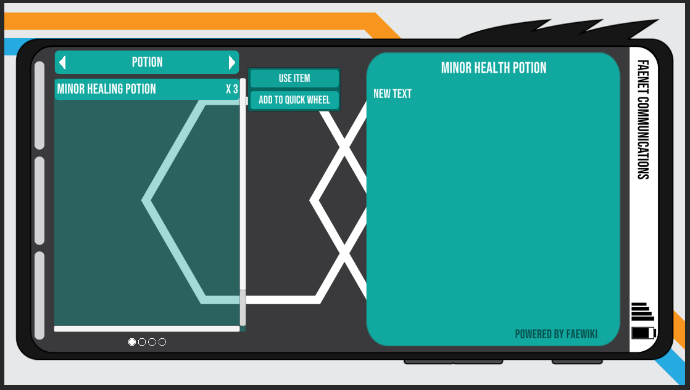 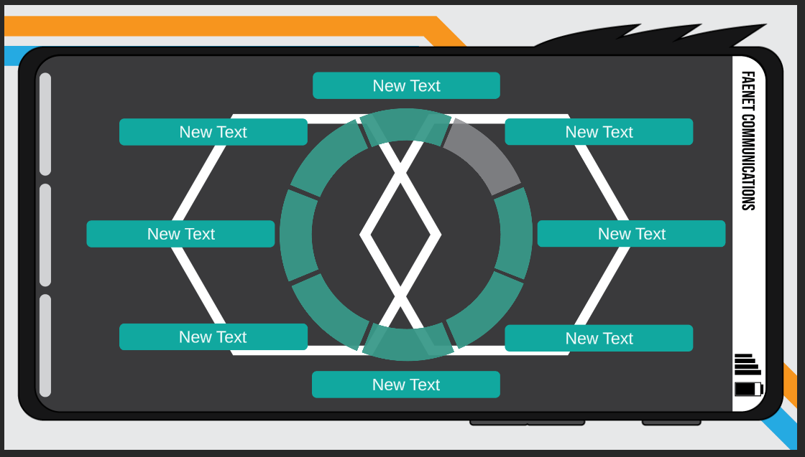From here, I moved onto the development of enemies, starting with their basic behaviour. Over the past few days I have developed several different behaviour patterns for the various enemies, these include a stationary turret, a ground enemy with melee combat, a ground enemy with ranged combat as well as a flying enemy. Each enemy type with the exception of the stationary turret has the ability to follow a designated path until they are within range of the player, once in range they will start following the player at a faster speed until they lose track of the player. They will then return to the nearest point on the path and continue their "patrol" until they come across the player again.
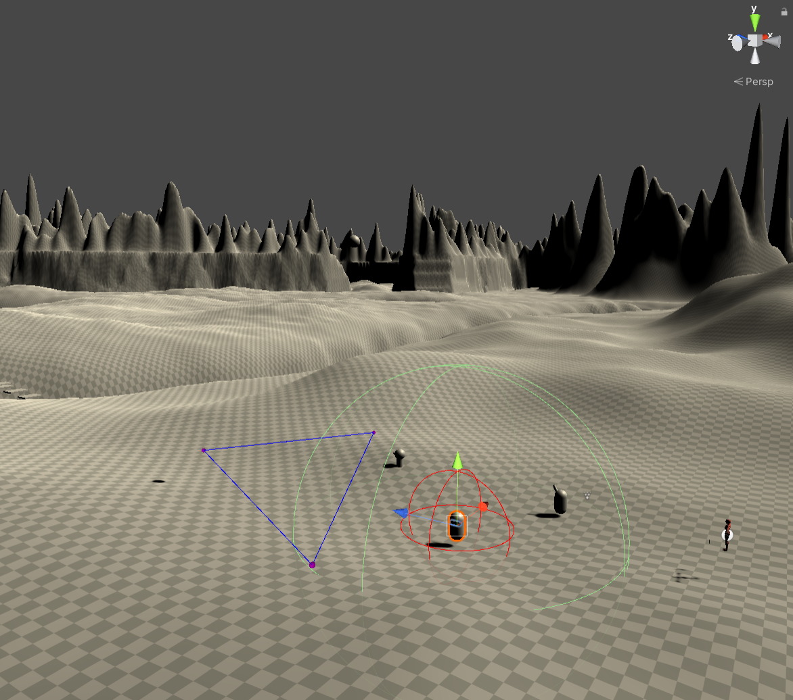As I was beginning development on the enemy behaviours I thought it would make more sense to change the terrain from a basic testing area to be more like an actual open world since this is where the enemies will actually be performing their various actions and attacks. Taking time to quickly whip up a new terrain certainly helped me during development as I encountered several bugs which would have gone unnoticed in the previous testing area. In regards to the next steps of development, I plan to further develop the AI for the enmies and hope to begin adding in some basic animations in the week to come and if time allows perhaps begin on some bosses.
By Ronan Cassidy - 6th of June 2020
What's in a Quest? More importantly, How do you show that? - #7
Having gotten to grips with the quest system, with different types of quest and rewards, I looked this week to start building a UI that would display this information.
With our game containing both Main Scenario Quests (MSQs) and Side quests, it felt natural to split the UI in this format. A lot of games will use a tab system to do this, but Unity, unfortunately, does not have a built in tab system. This means we need to make our own.At first, I looked at buttons the player could click and that would switch which panel was active in the canvas, but if we wanted to use this elsewhere, it wouldn’t be very scalable and would involve a lot of finicky selecting which things were which and what pages should go where.
So, I then looked to creating a tab system that could be used across the game with as little modification as needed. The principle is thus; using the IPointer event handling, Enter, exit and Selected, we can define our own actions within these. When the mouse hovers over a simple text box, the colour will change, and again if selected.
This will, of course, need amended for the controller input, most commonly the higher shoulder buttons allow the player to shuffle through the tabs. (i.e. R1/L1 for PlayStation and RB/LB for XBox/PC controllers).
By Sam ColvilleRea - 24th of May 2020
Player Inventory Overhaul - #6
The item wheel goes round and round!
Continuing on from last weeks post (technically earlier this week), I've moved onto giving the inventory/equipment system an overhaul as it doesn't have the functionality needed for the ability tree to be implimented completely. I also wanted to add in an item wheel to allow the player to quickly use items during battle without having to pause the game mid-battle, my item wheel system instead slows down time to let the player to pick the item they need while still keeping in the flow of the battle. The next step of action is to redo the inventory screen to allow the player to set items on the item wheel to specific slots and also sort out the item types in the inventory, currently all items are just in a simple list, instead I hope to have them broken into sections which the player can cycle through using the shoulder buttons. To accomplish this task I will use the button state system I've mentioned in a previous dev post to let the player cycle, the menus will be broken down into consumables, weapons and baubles (accessories) and may be expanded in the future.
Due to the last post only being a few days ago, I don't have much else to add in this development post as I'm trying to get back to posting on Fridays and Saturdays. Next weekends blog post should have more work mentioned it as well as a few screenshots to demonstrate the various inventory overhauls. Make sure to check back next weekend!
By Ronan Cassidy - 23rd of May 2020
Player Attack Overhaul - #5
We're back and ready to throwdown!
This weeks blog post from myself was delayed by a couple of days because I wanted to finish up overhauling our players attack system, the previous system I had implimented meant that the player could only use the provided sword and the animations for it were sloppy not to mention that all the player could do was a simple slash. This new system allows for the creation of new weapons with ease in the Unity editor itself and all thats needed are a model and any specific weapon animations, this new system will also allow for us to quickly change out the player's weapon for a variety of other weapons, instantly increasing the players oppurtunities to find a play style that suits them to a tee. Another nice little change to the attack system is that the player can now dodge roll and will have invincibility frames while rolling to allow them to dodge enemy attacks, I hope to smoothen out the transitions from player states to each other nearer the end of development but for the time being it works for testing purposes.
There has also been a lot more going on then just the attack overhaul however, after working on more functionality for the attack, I realised it was time to setup an input manager to work in tandem with Unity's latest input system to allow for our controls to change their functionality depending on the context of the player's situation. For example when a player is standing over an item, the Square button on a PS4 dualshock becomes pickup item rather than a dodge roll, each button has a context system to allow us to further expand on the possibilities of what the player can do. The new input manager also allows us to bind multiple actions to a key, for example a quick tap of the Square button will allow the player to dodge roll but if they hold the button for a second then they will sheath their weapon.
As I stated in my previous post I had planned to fix up the players animations and make them much smoother as their was some instances of the players feet sliding all over the ground when they attacked as can be seen in the previous video, it took a few days but after diving into the animation tools in Unity, I was able to start piecing together our animation system together and make it much neater and modular than it had been before. I was also able to smooth out some transitions and prevent the player's feet from sliding wildly across the floor, some other changes were made in regards to the player's actual animations such as the landing animation and a few other small bits and pieces.
Moving forward, I plan to work on the ability tree for the player and also to give the inventory system a minor overhaul and that should finish up the basis of the player mechanics for the being. Make sure to check back next weekend for another update on Project Crescent!
By Ronan Cassidy - 19th of May 2020
NPCs and Quest Development - #4
What's in a Quest?
This week and last, I have been generating ideas for a Quest Management System. This consists of an overall manager to check and set active Main Scenario Quests (MSQ) and Side quests. The quests themselves each have individual steps that combine to achieve your questing goals. When thinking back to quests in the many games I’ve played over the years, and most notably Final Fantasy XIV Online, each step can have different types of goal. This might be talking to a specific NPC, collecting a target number of items, killing a few enemies, or some combination thereof.
For this reason, I decided to abstract the QuestStep class, and allow for 4 child classes: Location, NPC, Quantity and Multi-Quantity. Each of these will have different behaviour, but each will share a description and isCompleted, and in much the same way Ronan abstracted the itemObj class, these will be scriptable objects to allow easy creation in the Unity editor when it comes time to piece the game together.
This all came from thinking about how NPCs will talk, what they will say and when they will say it. A lovely flow chart gives the sense of how this will happen, mostly being contextualised by the current quest(s) the player has active at a given time.
Next week should see further implementation of the Quest system, and hopefully see some NPCs having a chat with the player. Watch this space!
By Sam ColvilleRea - 15th of May 2020
Player Inventory Development - #3
Time to collect the world!
I started work on our player inventory system this week and have completed the prototype version, it will be redfined and added to as development continues as need be. This proved to be quite an interesting task to take on as first we needed to decide how players would collect items, how do we want to store this data and how can we keep track of it in the game itself. To begin we decided to follow suit with games such final fantasy and monster hunter world where once over the item you can hit a button to interact with and pickup the item from the ground. To make the item more noticable during development I threw on a small particle generator to act as a beacon for the item, from here we moved onto the storage and class of the item. There are many ways to go about this but I decided to take the approach of using scriptable objects and saving them to json and loading them back to the inventory when necessary.
To access the inventory screen, we would need to be able to pause the game so that was logically my next step. I designed a rough UI for both pause menu, setting menu and the inventory screen. This proved to be quite the task of making it so the player can use items, this involved making the item scriptable object into an abstract class to build more item types up. We ensured that we kept developing the game with the use of a controller in mind which led to a redesign of the input manager to allow us to have multiple interactions depending on the context of the players location or game state.
For the next stage of development, I have begun a redesign of our attack system to allow for more variety in play style and as well to be more forgiving than the previous implementation we had which was a very small hitbox for the player to actually hit anything. This new system should be a great addition to the character and will probably take longer than originally thought as we need to also look into the animations of the game for blending attacking and running together so you dont have to keep stopping to attack. I plan on showing off another video of the character's progress in next week's blog post so be sure to check back next week to see how its going!
By Ronan Cassidy - 10th of May 2020
Main Character Development - #2
The beginning of the adventure!
This week I've been mainly focusing on the development of the main character prototype, this encompasses components such as movement, animation, attacking and sensing. We've decided to use Unity's newest Input system in Unity 2019.3 which is a preview package and while there has been a bit of a learning curve to using it, it does remind me of the SteamVR 2.0 action system which I have used in a previous project. This event driven system is great for a action, adventure game as when the button is hit we can map it to call a particular method, however I can see a few issues down the line we may have but my remedy to this is to create an input manager that should solve any issues.
As you can see from the video above, I've got the basics for movement completed, this includes, walking, running, crouching as well as the same actions while having a weapon equipped and active. I will admit that I was thinking about checking for the ground under the player in a rather complex way when there was a much simpler way that was more than suitable for the job, it took about a day and a half of development time from me but I've leanred from it. The next step after this was to setup the animation controller as I planned to use unity's animation events alongside my attack script for sheathing and unsheathing your sword.
The coup de grâce of the the new Input System in Unity 2019.3 however is the ability to properly map button input for controllers in a simple way that allows you to use multiple control schemes from the very start of development. For instance, I've been using a PS4 dualshock for testing and debugging as well as swapping to mouse and keyboard if I want to see how it handles the swapping of controls and in the past week, I've learned quite a few little tricks in Unity that I wasn't aware of before such as animation events, attaching gameobjects to another object through the use of SetParent() without it causing strange scaling issues.
The next step on the road to our fully complete main character protoype is the development of an inventory and equipment system which I already have begun on, so check in next week to see further progress and hopefully the completed main character prototype!
By Ronan Cassidy - 1st of May 2020
Rising of The Crescent Moon - #1
Welcome to the development blog for Project Crescent!
Project Crescent is a 3D action RPG game with a modern fantasy setting being developed in the Unity game engine. This development blog will help you keep up to date with the progress of the project as well as document the journey from the first day of development to its eventual release. The game will be released on the Itch.IO marketplace in the summer of 2020 and the whole team is excited to get to work on the project.
To give a little insight into the development process, we began by writing up design documents, project scope and mechanic documents to give us a better idea of what we want the game to become and how to divide up our time to reach our goals. Using the Kanban agile methodology, we created a backlog of features and systems that we would need to develop and impliment. Now we are ready to begin the development journey and get to work.
In regards to the story, we don't want to reveal anything at the moment as we don't want to spoil the game for anyone and it's also likely to change in some areas as we develop the game and brain storm more on how it should play out. We hope you'll come back and check out the projects progres as we continue to build the game, there will be weekly blog posts so feel free to pop by and take a gander.
By Ronan Cassidy - 27th of April 2020